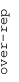
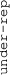

These results are also available as PDF and EPS documents.
Depending on your display resolution, scrolling or zooming may be necessary.
|  |
| 3 |
| 0 |
| -3 |
|  |
| GO_HOMOPHILIC_CELL_ADHESION_VIA_PLASMA_MEMBRANE_ADHESION_MOLECULES GO_HOMOPHILIC_CELL_ADHESION_VIA_PLASMA_MEMBRANE_ADHESION_MOLECULES | |||||||||||
| GO_CELL_DIFFERENTIATION_INVOLVED_IN_METANEPHROS_DEVELOPMENT GO_CELL_DIFFERENTIATION_INVOLVED_IN_METANEPHROS_DEVELOPMENT | |||||||||||
| GO_CHEMOREPELLENT_ACTIVITY GO_CHEMOREPELLENT_ACTIVITY | |||||||||||
| GO_CALMODULIN_BINDING GO_CALMODULIN_BINDING | |||||||||||
| GO_EXTRACELLULAR_MATRIX_STRUCTURAL_CONSTITUENT GO_EXTRACELLULAR_MATRIX_STRUCTURAL_CONSTITUENT | |||||||||||
| GO_SMOOTH_MUSCLE_CELL_CHEMOTAXIS GO_SMOOTH_MUSCLE_CELL_CHEMOTAXIS | |||||||||||
| GO_SPONTANEOUS_SYNAPTIC_TRANSMISSION GO_SPONTANEOUS_SYNAPTIC_TRANSMISSION | |||||||||||
| GO_PHOTORECEPTOR_ACTIVITY GO_PHOTORECEPTOR_ACTIVITY | |||||||||||
| GO_SERINE_TYPE_ENDOPEPTIDASE_INHIBITOR_ACTIVITY GO_SERINE_TYPE_ENDOPEPTIDASE_INHIBITOR_ACTIVITY | |||||||||||
| GO_WNT_PROTEIN_BINDING GO_WNT_PROTEIN_BINDING | |||||||||||
| GO_LIGAND_GATED_ION_CHANNEL_ACTIVITY GO_LIGAND_GATED_ION_CHANNEL_ACTIVITY | |||||||||||
| GO_TRANSMEMBRANE_RECEPTOR_PROTEIN_KINASE_ACTIVITY GO_TRANSMEMBRANE_RECEPTOR_PROTEIN_KINASE_ACTIVITY | |||||||||||
| GO_ANCHORED_COMPONENT_OF_PLASMA_MEMBRANE GO_ANCHORED_COMPONENT_OF_PLASMA_MEMBRANE | |||||||||||
| GO_PEPTIDE_RECEPTOR_ACTIVITY GO_PEPTIDE_RECEPTOR_ACTIVITY | |||||||||||
| GO_CAMERA_TYPE_EYE_PHOTORECEPTOR_CELL_DIFFERENTIATION GO_CAMERA_TYPE_EYE_PHOTORECEPTOR_CELL_DIFFERENTIATION | |||||||||||
| GO_AXONEMAL_DYNEIN_COMPLEX GO_AXONEMAL_DYNEIN_COMPLEX | |||||||||||
| GO_INTRINSIC_COMPONENT_OF_ENDOPLASMIC_RETICULUM_MEMBRANE GO_INTRINSIC_COMPONENT_OF_ENDOPLASMIC_RETICULUM_MEMBRANE | |||||||||||
| GO_POSITIVE_REGULATION_OF_VIRAL_PROCESS GO_POSITIVE_REGULATION_OF_VIRAL_PROCESS | |||||||||||
| GO_FICOLIN_1_RICH_GRANULE GO_FICOLIN_1_RICH_GRANULE | |||||||||||
| GO_OXIDOREDUCTASE_ACTIVITY_ACTING_ON_A_SULFUR_GROUP_OF_DONORS GO_OXIDOREDUCTASE_ACTIVITY_ACTING_ON_A_SULFUR_GROUP_OF_DONORS | |||||||||||
| GO_PEPTIDE_ANTIGEN_BINDING GO_PEPTIDE_ANTIGEN_BINDING | |||||||||||
| GO_TRNA_METABOLIC_PROCESS GO_TRNA_METABOLIC_PROCESS | |||||||||||
| GO_OXALOACETATE_METABOLIC_PROCESS GO_OXALOACETATE_METABOLIC_PROCESS | |||||||||||
| GO_RNA_BINDING_INVOLVED_IN_POSTTRANSCRIPTIONAL_GENE_SILENCING GO_RNA_BINDING_INVOLVED_IN_POSTTRANSCRIPTIONAL_GENE_SILENCING | |||||||||||
| GO_ODORANT_BINDING GO_ODORANT_BINDING | |||||||||||
| GO_KERATIN_FILAMENT GO_KERATIN_FILAMENT | |||||||||||
| GO_CHEMOKINE_ACTIVITY GO_CHEMOKINE_ACTIVITY | |||||||||||
| GO_TYPE_I_INTERFERON_RECEPTOR_BINDING GO_TYPE_I_INTERFERON_RECEPTOR_BINDING | |||||||||||
| GO_HORMONE_ACTIVITY GO_HORMONE_ACTIVITY | |||||||||||
| GO_GLUCURONOSYLTRANSFERASE_ACTIVITY GO_GLUCURONOSYLTRANSFERASE_ACTIVITY | |||||||||||
| GO_SM_LIKE_PROTEIN_FAMILY_COMPLEX GO_SM_LIKE_PROTEIN_FAMILY_COMPLEX | |||||||||||
| GO_G_PROTEIN_COUPLED_AMINE_RECEPTOR_ACTIVITY GO_G_PROTEIN_COUPLED_AMINE_RECEPTOR_ACTIVITY | |||||||||||
| GO_NEURON_FATE_COMMITMENT GO_NEURON_FATE_COMMITMENT | |||||||||||
| GO_DEFENSE_RESPONSE_TO_GRAM_NEGATIVE_BACTERIUM GO_DEFENSE_RESPONSE_TO_GRAM_NEGATIVE_BACTERIUM | |||||||||||
| GO_NEGATIVE_REGULATION_OF_EPIDERMAL_CELL_DIFFERENTIATION GO_NEGATIVE_REGULATION_OF_EPIDERMAL_CELL_DIFFERENTIATION | |||||||||||
| GO_HISTONE_BINDING GO_HISTONE_BINDING | |||||||||||
| GO_POST_GOLGI_VESICLE_MEDIATED_TRANSPORT GO_POST_GOLGI_VESICLE_MEDIATED_TRANSPORT | |||||||||||
| GO_NF_KAPPAB_BINDING GO_NF_KAPPAB_BINDING | |||||||||||
| GO_NUCLEAR_RECEPTOR_TRANSCRIPTION_COACTIVATOR_ACTIVITY GO_NUCLEAR_RECEPTOR_TRANSCRIPTION_COACTIVATOR_ACTIVITY | |||||||||||
| GO_DNA_DEPENDENT_DNA_REPLICATION GO_DNA_DEPENDENT_DNA_REPLICATION | |||||||||||
| GO_CULLIN_RING_UBIQUITIN_LIGASE_COMPLEX GO_CULLIN_RING_UBIQUITIN_LIGASE_COMPLEX | |||||||||||
| GO_CILIARY_BASAL_BODY_PLASMA_MEMBRANE_DOCKING GO_CILIARY_BASAL_BODY_PLASMA_MEMBRANE_DOCKING | |||||||||||
| GO_TRANSLATION_FACTOR_ACTIVITY_RNA_BINDING GO_TRANSLATION_FACTOR_ACTIVITY_RNA_BINDING | |||||||||||
| GO_POSITIVE_REGULATION_OF_ATPASE_ACTIVITY GO_POSITIVE_REGULATION_OF_ATPASE_ACTIVITY | |||||||||||
| GO_SELECTIVE_AUTOPHAGY GO_SELECTIVE_AUTOPHAGY | |||||||||||
| GO_90S_PRERIBOSOME GO_90S_PRERIBOSOME | |||||||||||
| GO_MEMBRANE_FISSION GO_MEMBRANE_FISSION | |||||||||||
| GO_RIBOSOMAL_SUBUNIT GO_RIBOSOMAL_SUBUNIT | |||||||||||
| GO_INNER_MITOCHONDRIAL_MEMBRANE_PROTEIN_COMPLEX GO_INNER_MITOCHONDRIAL_MEMBRANE_PROTEIN_COMPLEX | |||||||||||
| GO_PROTEIN_LOCALIZATION_TO_CHROMOSOME_CENTROMERIC_REGION GO_PROTEIN_LOCALIZATION_TO_CHROMOSOME_CENTROMERIC_REGION | |||||||||||
| GO_IRON_SULFUR_CLUSTER_ASSEMBLY GO_IRON_SULFUR_CLUSTER_ASSEMBLY | |||||||||||
| GO_MRNA_EDITING_COMPLEX GO_MRNA_EDITING_COMPLEX | |||||||||||
| GO_ESTABLISHMENT_OF_RNA_LOCALIZATION GO_ESTABLISHMENT_OF_RNA_LOCALIZATION | |||||||||||
| GO_COPI_COATED_VESICLE_MEMBRANE GO_COPI_COATED_VESICLE_MEMBRANE | |||||||||||
| GO_AROMATIC_AMINO_ACID_FAMILY_CATABOLIC_PROCESS GO_AROMATIC_AMINO_ACID_FAMILY_CATABOLIC_PROCESS | |||||||||||
| GO_TASTE_RECEPTOR_ACTIVITY GO_TASTE_RECEPTOR_ACTIVITY | |||||||||||
| GO_INTRAMEMBRANE_LIPID_TRANSPORTER_ACTIVITY GO_INTRAMEMBRANE_LIPID_TRANSPORTER_ACTIVITY | |||||||||||
| GO_HUMORAL_IMMUNE_RESPONSE_MEDIATED_BY_CIRCULATING_IMMUNOGLOBULIN GO_HUMORAL_IMMUNE_RESPONSE_MEDIATED_BY_CIRCULATING_IMMUNOGLOBULIN | |||||||||||
| GO_CELLULAR_RESPONSE_TO_PROSTAGLANDIN_E_STIMULUS GO_CELLULAR_RESPONSE_TO_PROSTAGLANDIN_E_STIMULUS |